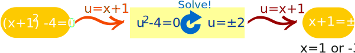

Change of Variables
Sometimes "changing a variable" can help us solve an equation.
The Idea: If we can't solve it here, then move somewhere else where we can solve it, and then move back to the original position.
Like this:
These are the steps:
- Replace an expression (like "2x-3") with a variable (like "u")
- Solve,
- Then put the expression (like "2x-3") back into the solution (where "u" is).
Example
Here is a simple example: solving (x+1)2 − 4 = 0.
Replace "x+1" with "u" ... Solve ... Replace "u" with "x+1":

More Examples
OK, we could have solved that without doing that "u=x+1" thing, but here is question where "changing variables" is very useful:
Example: (x2+2)2 − 2(x2+2) − 15 = 0
It could be hard to solve, but let's try a change of variables:
Let u = x2+2, then our equation becomes:
u2 − 2u − 15 = 0
Which is a quadratic equation that factors nicely into:
(u−5)(u+3)
And the solutions are simply:
u = 5 or u = −3
But wait! We still need to turn "u" back into "x2+2":
| First Solution |
|---|
| u = 5 |
| x2+2 = 5 |
| x2 = 5−2 = 3 |
| x = ±√3 |
| Second Solution |
|---|
| u = −3 |
| x2+2 = −3 |
| x2 = −3−2 |
| x2 = ±√(−5) |
The second solution is imaginary (it has the square root of a negative number), so let us just use the First Solution:
Answer: x = ±√3
Check: ((√3)2+2)2 − 2((√3)2+2) − 15 = = 52 − 2·5 − 15 = 25−10−15 = 0
Check: ((−√3)2+2)2 − 2((−√3)2+2) − 15 = = 52 − 2·5 − 15 = 25−10−15 = 0
Example: 3x8 + 5x4 − 2 = 0
It sort of looks Quadratic, but it is degree 8 which could be impossible to solve.
But if we use:
u = x4
Then it becomes:
3u2 + 5u − 2 = 0
Which is Quadratic. And solving it gives:
u = 1/3 or u = −2
Now put the original back again:
| First Solution |
|---|
| u = 1/3 |
| x4 = 1/3 |
| x = (1/3)1/4 |
| Second Solution |
|---|
| u = −2 |
| x4 = −2 |
| x = (−2)1/4 |
Answer: x = (1/3)1/4 and x = (−2)1/4
Check: You can check this answer!
Conclusion
"Change of Variable" can help us solve difficult questions, using the steps:
- Replace an expression with a variable (like "u")
- Solve,
- Put the expression back into the solution (where "u" is)